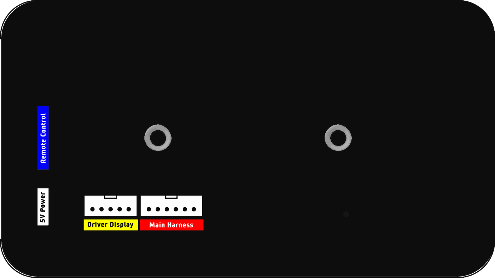

CHAPTER 01安全上のご注意
CHAPTER 02各部の名前
 123456789101112
123456789101112| 番号 | 名前 | はたらき |
| 1 | 赤ボタン（CALIB / STAGE） | 短押し：ステージ計測。長押し：距離の補正。 |
| 2 | 青ボタン（NEXT / SETUP） | 短押し：上段の表示切替。長押し：時差・明るさ・ドライバー表示の設定。 |
| 3 | 上の CLR | 上段の表示に対する操作（リセットなど）。設定中は数字を上げます。 |
| 4 | 下の CLR | Trip B のリセット。設定中は数字を下げます。 |
| 5 | 60 ボタン | 速度警告の ON／OFF と設定。 |
| 6 | 赤い LED | 速度警告。 |
| 7 | 進行方向スイッチ | ↑ 前進、○ 停止、↓ 後退。 |
| 8 | 上段表示 | 時計・Trip A・速度・ファイナルタイム・ステージ記録を切り替えて表示。 |
| 9 | 下段表示 | Trip B（区間距離）を表示。 |
| 10 | 緑の LED（GPS） | 点滅中は受信待ち、点灯で受信完了。 |
| 11 | 白の LED（進行方向） | 消灯は前進、点灯は停止、点滅は後退。 |
| 12 | 青い LED | ファイナルタイムの警告（10 章）。 |
右側面：上から電源スイッチ（DC12V 用）、リモコン端子、USB-C の電源（5V）。
背面：取り付け用の埋め込みナット、ドライバーディスプレイ（別売りオプション）とメインハーネスのコネクタ（14 章）。
CHAPTER 03電源と GPS
USB-C で使う
- 右側面の USB-C に 5V をつなぐと、自動で電源が入ります。
- 起動直後は「------」を表示します。
- 緑の LED が点滅している間は GPS を探しています。点灯したら受信完了で、正しい時刻が表示されます。
DC12V で使う
- 背面のメインハーネスの DC12V（赤）と GND（黒）を車両につなぎます。
- 右側面の赤いスイッチの下側（｜）を押すと ON、上側（○）を押すと OFF です。
- USB-C で給電するときは、このスイッチは使いません。
CHAPTER 04上段の表示切替
青ボタンを短く押すたびに、上段の表示が次のように切り替わります（リモコンの青ボタンでも同じ）。下段は通常いつも Trip B です。
| 画面 | 上段の表示 | 表示例 |
| 時計 | GPS の時刻（時.分.秒） | |
| Trip A | 全体の距離（km、10 m 単位） | |
| 速度 | 先頭に「S」。補正後の速度（km/h） | |
| ファイナルタイム | Ave に対する早遅（10 章） | |
| ステージ記録 | ステージタイム。下段は記録番号 |
ステージ記録のあとは、時計に戻ります。
CHAPTER 05トリップ（Trip A・Trip B）
トリップのリセット
Trip A の画面で上の CLR を短く押すと Trip A が 0 に、下の CLR を短く押すと Trip B が 0 になります。Trip B は、時計・速度・ファイナルタイムの画面やステージ中でもリセットできます。
任意の距離にセットして計測する
- Trip A の画面で上の CLR を長押しすると、Trip A の入力になります。
- 点滅している桁を、上の CLR で＋1、下の CLR で−1。青ボタンで次の桁へ移ります。
- 上の CLR を長押しして決定します。
- Trip B は、Trip A の画面で下の CLR を長押し。決定も下の CLR の長押しです。
進行方向スイッチ
| スイッチ | 動作 | 白の LED |
| ↑ 前進 | 距離を数えます。 | 消灯 |
| ○ 停止 | 距離を数えません。 | 点灯 |
| ↓ 後退 | 走った分を差し引きます（ミスコースで戻るときなど）。 | 点滅 |
Trip A・Trip B の両方に効きます。
CHAPTER 06距離の補正
コマ図（ロードブック）の距離と表示が合わないときは、補正値で合わせます。
例：コマ図で 10.00 km の区間で、Trip A が 10.20 km だった場合。
- 赤ボタンを長押しすると、補正（C）に入ります。
- 点滅している桁を、上の CLR で＋1、下の CLR で−1。青ボタンで次の桁へ移ります。
- 10.20 ÷ 10.00 ＝ 1.0200 にします。
- 赤ボタンを短く押すと、保存して時計に戻ります。Trip A は 10.00 km になります。
補正中に赤ボタンを長押しすると 1.0000 に戻ります。補正値は速度の表示にもかかります。
CHAPTER 07速度と最高速
速度の画面では、「S」のあとに速度（補正後の値）を表示します。上の CLR を短く押すと最高速（P）、もう一度押すと速度に戻ります。最高速はステージ計測中の最高速で、ステージを始めると 0 に戻ります。
CHAPTER 08速度警告
- 60 ボタンを短く押すと、速度警告の設定（A）に入ります。
- 上の CLR で＋10、下の CLR で−10（10〜90 km/h）。
- 60 ボタンを短く押すと、警告が ON になって元の画面に戻ります。
- OFF にするには、60 ボタンをもう一度短く押します。
| 速度 | 赤い LED／ドライバーディスプレイの「A」（2 段表示版は速度も） |
| 制限速度の 5 km/h 手前まで | 点灯 |
| 制限速度の 5 km/h 手前から | ゆっくり点滅 |
| 制限速度以上 | 速く点滅 |
60 ボタンの長押しでも設定に入れます（長押しで戻ると警告は ON になりません）。
CHAPTER 09ステージ計測とステージ記録
ステージ計測
- 赤ボタンを短く押すと、次の分の 00 秒に向けてカウントダウンします。Trip A・Trip B は自動で 0 になります。
- カウントダウン中に車が動き出すと（5 km/h 以上）、その瞬間に自動でスタートします。動かなければ 00 秒でスタートします。カウントダウン中に赤ボタンを押して、その場でスタートすることもできます。
- スタートから 5 秒間はタイムを表示し、そのあと上段は Trip A になります。左の「SS」の点滅が計測中のしるしです。
- 1 km ごとに、通過タイムを 3 秒間点滅で表示します。
- ゴールで赤ボタンを押すとフィニッシュ。タイムが点滅し、Trip B は 0 に戻ります。
- もう一度赤ボタンを押すとステージ終了。時計の画面ではフィニッシュ時刻を 2 分間点滅表示します（上の CLR ですぐ解除）。
カウントダウン中は青ボタンでやめられます。赤ボタンの代わりに、リモコンの赤ボタンや外部スイッチ（黄線）でも同じ操作ができます。
ステージ記録
上段の表示を「ステージ記録」にすると、記録したタイムを見られます。下段は記録番号（SS01〜SS30）。上の CLR で次の記録、下の CLR で前の記録です。記録は 30 本までで、電源を切ると消えます。
CHAPTER 10Ave とファイナルタイム
Ave（目標平均速度）を設定すると、ステージスタートからの距離と経過時間から、Ave で走った場合との差（ファイナルタイム）を表示します。Ave が OFF のときは「OFF」を表示します。
設定のしかた
- ファイナルタイムの画面で上の CLR を短く押すと、Ave の設定に入ります。
- 下段の Ave を、上の CLR で OFF → 30 → 40 … と設定します。青ボタンで次の桁へ移ります。
- 上段はスタート時刻です。ステージを始めると、そのスタート時刻に自動で合わせます。
- 上の CLR を長押しして保存します（ここまでの距離はそのまま）。赤ボタンで保存すると、その地点から距離を測り直します。
CHAPTER 11設定（時差・明るさ・ドライバー表示）
青ボタンを長押しすると設定に入り、青ボタンの短押しで次の設定へ進みます。最後に青ボタンを押すと元の画面に戻ります。
| 順番 | 表示 | 内容 | 操作 |
| 1 | Utc | 時差（−12〜＋12）。日本は＋9。 | 上の CLR：＋1 下の CLR：−1 |
| 2 | LEd | 明るさ（0〜2 の 3 段階）。 | 上の CLR：明るく 下の CLR：暗く |
| 3 | dd | ドライバーディスプレイの距離表示。「0.01」は通常（12.34 km）、「10」は 10 km 未満を拡大して 1 m 桁まで（1.230 km）。 | 上下の CLR：切り替え |
設定は電源を切っても記憶されます。
ドライバーディスプレイの距離表示について
「10」モードは、主にラリーのレッキ時に、ドライバーがストレートやコーナーの距離を 10 m 単位で判定するための機能です。10 m、20 m … と表示することで、ペースノートをより明確に作成する手助けとなるでしょう。
CHAPTER 12リモコン
右側面のリモコン端子に、リモコンをつなげます。リモコンは設定中は働きません。
標準付属のリモコン（1 ボタン）
| ボタン | はたらき |
| 白 | Trip B のリセット（通常の画面とステージの画面） |
ハンドルやシフトノブの近くに付けておくと、コマ図ごとの Trip B のリセットが手元でできます。
5 ボタンリモコン（別売りオプション）
Trip A の微調整や表示の切替、ステージ操作も手元でできるリモコンです。
| ボタン | はたらき |
| 灰 | Trip B のリセット |
| 緑 | Trip A を ＋10 m |
| オレンジ | Trip A を −10 m |
| 青 | 上段の表示切替（本体の青ボタン短押しと同じ） |
| 赤 | ステージ（本体の赤ボタン短押しと同じ） |
CHAPTER 13ドライバーディスプレイ（別売りオプション）
背面のコネクタにドライバーディスプレイをつなぐと、ドライバーの前にも表示できます。ドライバーディスプレイには、2 段表示版と1 段表示版の 2 種類があります。
| 2 段表示版 | 1 段表示版 | |
| 速度 | 上段に表示（km/h） | 表示しません |
| 距離 | 下段：左端が速度警告の「A」、続いて Trip B | 左端が速度警告の「A」、続いて Trip B |
| 速度警告中 | 「A」と速度が点滅 | 「A」が点滅 |
Trip B と速度は、本体と同じく補正後の値です。距離表示（通常／10 km 未満を拡大）の切り替えは、どちらの版も 11 章の設定で行います。
CHAPTER 14背面（取り付け・コネクタ・外部スイッチ）

M4M449 mm取り付け用の埋め込みナット
背面のコネクタの上に、取り付け用のナットが 2 か所埋め込まれています。ステーやマウントにボルトで固定できます。
| 項目 | 内容 |
| ボルト | M4 |
| ボルトの長さ | 取り付ける部分（ステーなど）の板厚 ＋ 10 mm まで |
| ナットの間隔 | 49 mm（中心間）。同じ間隔の RAM マウントのベースが使えます。 |
コネクタ
背面には 2 つのコネクタがあります。左がドライバーディスプレイ用、右がメインハーネス用です。
メインハーネスのピン配置
| ピン（背面から見て左から） | 色 | 用途 |
| 1 | 赤 | DC12V |
| 2 | 黒 | GND |
| 3 | 白 | Reset trip（外部スイッチ：Trip B リセット） |
| 4 | 黄 | Stage（外部スイッチ：ステージ） |
| 5 | 黒 | GND |
| 6 | 黒 | GND |
外部スイッチ
| 配線 | はたらき |
| 白（Reset trip） | Trip B のリセット専用。通常の画面とステージの画面で、短く押すと Trip B が 0 になります（設定中は無効）。フットスイッチの増設などに使えます。 |
| 黄（Stage） | 赤ボタンのステージ操作（スタート・フィニッシュ）だけを増設します。長押しは何もしません（距離補正には入りません）。 |
CHAPTER 15主な仕様
| 項目 | 内容 |
| 外形寸法 | 幅 135 × 高さ 76 × 奥行 27 mm（ボタン・スイッチなどの突起部を除く） |
| 電源 | USB-C（5V）、または DC12V（背面のメインハーネス）。同時には使えません。 |
| 距離・速度 | GPS による測定。補正値 0.0000〜2.9999 で補正 |
| 記憶 | Trip A・Trip B・補正値・時差・明るさ・ドライバーディスプレイの距離表示・制限速度・Ave の設定（ステージ記録は電源を切ると消えます） |
| 接続 | ドライバーディスプレイ、メインハーネス（DC12V・外部スイッチ）、リモコン |
| 付属品 | リモコン（白・1 ボタン：Trip B リセット） |
| 別売りオプション | 5 ボタンリモコン、ドライバーディスプレイ（2 段表示版／1 段表示版） |
CHAPTER 16操作早見表
| 画面 | 青 | 赤 | 上の CLR | 下の CLR |
| 時計 | 短：次の画面 長：設定 | 短：ステージ 長：補正 | フィニッシュ時刻の点滅を解除 | Trip B リセット |
| Trip A | 短：次の画面 | 短：ステージ 長：補正 | 短：Trip A リセット 長：Trip A 入力 | 短：Trip B リセット 長：Trip B 入力 |
| 速度 | 短：次の画面 | 短：ステージ 長：補正 | 速度 ⇔ 最高速 | Trip B リセット |
| ファイナルタイム | 短：次の画面 | 短：ステージ 長：補正 | 短：Ave の設定 | Trip B リセット |
| ステージ記録 | 短：時計へ | 短：ステージ | 次の記録 | 前の記録 |
| ステージ | カウントダウン中：やめる | カウントダウン → スタート → フィニッシュ → 終了 | フィニッシュ後：終了 | Trip B リセット |
| 設定の画面 | 上の CLR | 下の CLR | 青 | 決定・戻る |
| 補正（C） | ＋1 | −1 | 次の桁 | 赤 短：保存／赤 長：1.0000 |
| Trip A・B の入力 | ＋1 | −1 | 次の桁 | A：上の CLR 長／B：下の CLR 長 |
| Utc・LEd・dd | ＋／切替 | −／切替 | 次の設定 | 最後の青で戻る |
| 速度警告（A） | ＋10 | −10 | — | 60 短：ON で戻る |
| Ave の設定 | ＋ | − | 次の桁 | 上の CLR 長：保存／赤：保存して距離を測り直す |
アニメーションで操作を確認できるマニュアルもあります：manual.rally-arm.com